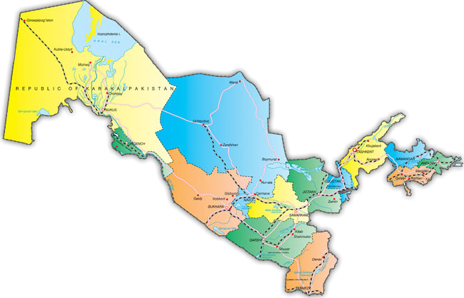
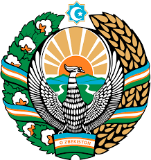
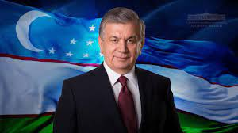

O'zbekiston |
|||||
| O'zbekiston |
O'zbekiston
|
||||
| Toshkent | |||||
| Buxoro | |||||
| Samarqand | |||||
| Navoiy | |||||
| Farg'ona | |||||
| Jizzax | |||||
| Xorazm | |||||
| Namangan | |||||
| Qashqardaryo | |||||
| Sirdaryo | |||||
| Surxandaryo | |||||
| Andijon | |||||
Oʻzbekiston (rasman: Oʻzbekiston Respublikasi) — Markaziy Osiyoning markaziy qismida joylashgan mamlakat. Oʻzbekistonning poytaxti — Toshkent shahri boʻlib, davlat tili — oʻzbek tili hisoblanadi. Maydoni — 448,978[5] km2. Aholi soni — 35 445 000 kishi (2022)[6]. Pul birligi — soʻm. Oʻzbekiston Respublikasi 12 ta viloyat, Toshkent shahri va Qoraqalpogʻiston Respublikasidan iboratdir, shuningdek, davlat mustaqil, demokratik, dunyoviy va konstitutsiyaviy davlat ham hisoblanadi. Oʻzbekiston MDH, BMT, YXHT va SHHT aʼzosidir. Oʻzbekiston qirgʻoqqa ega boʻlmagan besh mamlakat bilan, yaʼni: shimoldan Qozogʻiston; shimoli-sharqdan Qirgʻiziston; janubi-sharqdan Tojikiston; janubdan Afgʻoniston; va janubi-gʻarbiy qismida Turkmaniston bilan chegaradosh. Oʻzbekiston iqtisodiyoti bozor iqtisodiyotiga bosqichma-bosqich oʻtadi, tashqi savdo siyosati import oʻrini bosishga asoslangan. 2017-yil sentabrida mamlakat valyutasi bozor kursi boʻyicha toʻliq konvertatsiya qilinmoqda. Oʻzbekiston paxta tolasini ishlab chiqaruvchi va eksport qiluvchi yirik korxonadir. Mamlakatda shuningdek, dunyodagi eng yirik oltin koni mavjud. Sovet davridagi ulkan energiya ishlab chiqarish qurilmalari va tabiiy gazni yetkazib berish bilan Oʻzbekiston Markaziy Osiyodagi eng yirik elektr ishlab chiqaruvchisi boʻldi. Oʻzbek soʻzining kelib chiqishi Oʻzbek etnonimining kelib chiqishi toʻgʻrisida bir nechta tahminlar mavjud. Shaxsiy ism sifatida oʻzbek soʻzining birinchi eslatilishi XII asrga toʻgʻri keladi. Oʻzbek soʻzi turkiy qabilalari orasida Movarounnahrda XIII asrda moʻgʻullar kelguniga qadar paydo boʻlgan. XII asr arab tarixchisi Usoma Ibn Munqiz „Taʼlim kitobida“ Saljuqiylar davrida 1115-1116-yildagi yoʻlboshlovchilaridan biri amir Oʻzbek degan Mosul hukmdori boʻlganligini taʼkidlaydi[7]. Tarixchi Rashiduddinning yozishicha, Tabrizda hukmronlik qilgan Ildegiziylar sulolasining soʻnggi vakili Oʻzbek Muzaffar (1210-1225) boʻlgan[8] 1221-yilda Afgʻonistondagi Xorazmshoh Jaloliddin qoʻshinlarining yetakchilaridan biri Jahon Paxlavon Oʻzbek Tayi edi.[9]
Tarixchi Mutal Ermatov oʻzbek soʻzi „Oʻzlar“ urugʻi nomidan kelib chiqqan deb taxmin qilgan[10] Tarix fanlari doktori, professor R. G. Mukminova oʻzbeklarning etnik ismini Oʻzbek Xon nomi bilan bogʻlashga qarshi qoʻshimcha dalillar keltirgan. Sharofiddin Ali Yazdiy Oʻzbek Xon davridan ancha oldin 1289-yilgi voqealar haqida xabar berib, Tabriz viloyatidagi oʻzbek qoʻshinlarining reydini eslatib oʻtadi.[11] Boshqa tarixchilarning fikricha, XIV asrning 60-yillarida, Dashti qipchoq hududida oʻzbeklar deb nomlangan koʻchmanchi turkiy qabilalarining ittifoqi tuzildi. XIV asrning 60-yillarida „oʻzbek“ etnonimi sharqiy Dashti qipchoqning butun turkiy aholisi uchun jamoaviy nomga aylandi. „Oʻzbek“ etnonimi Amir Temur davrida Movarounnahrga kirib kelgan. Buyuk shoir Alisher Navoiy (1441-1501) yozgan asarlarida „oʻzbek“ etnonimini Xuroson va Movarounnahrda tilga olgan.[12] Tarixi Asosiy maqola: Oʻzbekiston tarixi Qadimgi davrlarda 2000 ga yaqin. Oʻzbekistonga Anau madaniyatining bir qismi boʻlgan voha madaniyatidan tarqalgan.[13] Oʻzbekiston ipak yoʻlida joylashgan. Bosqinchilar mamlakat bo'ylab ko'p marta sayohat qilishgan. Iskandar Zulqarnayn miloddan avvalgi 327 yilda Samarqandda toʻxtagan.[14] va mahalliy qabilaning xotinini oldi. Somoniylar sulolasi 8-asrda arab musulmonlari tomonidan bosib olinmaguncha bu hududda hukmronlik qilgan. Moʻgʻul Chingizxon 1220-yilda bu hududni bosib oldi.[15] 14-asrda Amir Temur moʻgʻullarni magʻlub etib, oʻz saltanatini oʻrnatdi. Uning istilolari Yaqin Sharqqa qadar davom etdi. 1402-yilda Usmonlilar sultoni Boyazidni yengib, asirga oladi. Keyinchalik Eron bilan yaqin aloqada boʻlgan shahar-davlatlar tashkil topdi.[16] Rossiya imperiyasi 1865-yilda Toshkentni, 1876-yilda Qoʻqonni magʻlub etdi. Rossiya fuqarolar urushidan keyin tog'larda bolsheviklarga bo'linib ketgan qarshilik 1930-yillargacha davom etdi. 1919-yilda Rossiyaga boʻysungan Buxoro va Xiva amirliklari agʻdarilib, keyingi yili Buxoro Xalq Respublikasi va Xorazm Xalq Respublikasidan nominal mustaqillikka erishdilar. 1924-yilda Buxoro va Xorazm Xalq respublikalari, sobiq Qoʻqon tarkibiga kiruvchi Oʻzbekiston Sovet Sotsialistik Respublikasi tuzildi. Sovet Ittifoqi Oʻzbekistonni paxtachilik hududiga aylantirdi va qishloq xoʻjaligini qayta qurishning taʼsiri hozir ham mamlakatda sezilmoqda.[17]

Sovet Ittifoqi parchalanganidan soʻng Oʻzbekiston Kompartiyasining sobiq Bosh kotibi Islom Karimov 1991-yil dekabrida 88 foiz ovoz bilan prezident etib saylandi. Saylovlar koʻpchilik tomonidan qabul qilinmadi va islomiy qarshilik guruhlari paydo boʻla boshladi.[18] 1993-yilda islom fundamentalizmining kuchayishi haqidagi xavotirlar Oʻzbekistonni MDHning Tojikistondagi tinchlikparvar missiyasiga qoʻshilishiga olib keldi. Shu bilan birga, hukumat inson huquqlari tashkilotlari tomonidan qoralangan. 1995-yil mart oyida Kerimov o'z mandatini 1997-yildan 2000-yilgacha uzaytirgan referendumda 99 foiz qo'llab-quvvatladi.[19] 1995-yilda muxolifat partiyalariga yana ruxsat berildi.[20] 1999-yil fevralida Oʻzbekistondagi islomiy harakatni ayblagan bomba oʻrnatilgan avtomobildan prezident Karimov omon qoldi. 2000-yil avgust oyida qurolli guruhlar Qirgʻizistonga bostirib kirdi va janubda toʻqnashuvlar sodir boʻldi. 2004-yil mart oyida Buxoro va Toshkentda terrorizm va portlashlarning yangi toʻlqini, jumladan, mamlakatdagi birinchi xudkush portlashlar sodir boʻldi.[18] Karimov taqiqlangan Hizb ut-Tahrir (Ozodlik partiyasi) guruhini oʻz aybiga iqror boʻlmaganlikda aybladi.[19] 2004-yil 30-iyulda Toshkentda Isroil va AQSh delegatsiyalari sakkiz kishi tomonidan portlatilgan. Islomiy harakat yetakchilari Tohir Juldashev va Juma Xodjiyev sirtdan va eshitilmagan holda oʻlimga hukm qilindi.[21] 2005-yil may oyida Andijon shahrida tartibsizliklar boshlandi. 2005-yil 12-mayda boshlangan qoʻzgʻolonlarda muxolifat vakillari Andijondagi maʼmuriy binoni egallab oldilar. Xalqaro Toshkent radiosiga koʻra, muxolifat aʼzolari harbiy okrugga bostirib kirib, oʻnlab oʻqotar qurollarni qoʻlga kiritib, mehnat lageriga hujum uyushtirib, mahbuslarni, jumladan, “Islomiy Akromiya”ni ozod qilgan.Harakat aʼzolari Milliy xavfsizlik agentligi binosi va Dominion tuman kengashini egallab olishga uringan. bino. Hukumat manbalariga koʻra, huquq-tartibot idoralarining qarshi hujumi natijasida 187 kishi halok boʻlgan, ularning aksariyati harbiylardir. Muxolifatga koʻra, askarlarning olomonga qarata oʻt ochishi oqibatida kamida 700 askar halok boʻlgan. Oʻzbekiston hukumatiga koʻra, bu xorij tomonidan qoʻllab-quvvatlangan islomiy toʻntarishga urinish edi.[22][23] Voqeadan soʻng Oʻzbekistonning Gʻarb bilan munosabatlari yomonlashdi va mamlakat Afgʻonistondagi operatsiyada va tinchlikparvar kuchlarni saqlashda ishtirok etayotgan NATO kuchlariga 2005-yil oxirigacha mamlakatni tark etishni buyurdi. Yevropa Ittifoqi qurol embargosi bilan javob qaytardi va hukumatning 12 aʼzosiga vizani taqiqladi. Yevropa Ittifoqi 2007-yilda cheklovlarni yumshatgan, biroq mamlakatdagi inson huquqlari ahvolidan xavotir bildirgan. 2009-yilda qurol embargosi butunlay bekor qilindi. 2012-yilda Oʻzbekiston Afgʻonistonni tark etar ekan, NATOga oʻz jihozlarini oʻz hududi boʻylab eksport qilishga ruxsat bergan edi. 2013-2014-yillarda prezidentning qizi Gulnora Kerimova pul yuvishda ayblangan. Ayblov ham hokimiyat uchun kurash edi, chunki qiz korruptsiya ayblovlari paytida g'oyib bo'ldi. U 2016-yilgi prezidentlik saylovi vaqtida Toshkentda uy qamogʻida boʻlgani taxmin qilingan edi. Qizning Londonda yashovchi oʻgʻli Oʻzbekiston rasmiylaridan onasining ahvoli va qayerda ekanligi haqida maʼlumot soʻragan. Karimov 2016-yilning avgust-sentabr oyi boshida miya qon ketishidan vafot etgan.[24] Yangi saylovga qadar prezidentlik vazifasini Senat raisi Nigʻmatilla Yoʻldoshev egallab turgan.[25] 2016-yil 4-dekabrda boʻlib oʻtgan prezidentlik saylovida Shavkat Mirziyoyev gʻalaba qozondi. Prezident Islom Karimovning avtoritar rejimi 1989-yildan 2016-yilgacha davom etdi[26]. Karimov 1989-1991-yillarda Sovet Oʻzbekistonining birinchi partiya rahbari, 1991-2016-yillarda esa mustaqil Oʻzbekistonning birinchi prezidenti boʻlgan. Karimovning vorisi Shavkat Mirziyoyev 2003—2016-yillarda Karimovning sodiq bosh vaziri boʻlgan, biroq prezident boʻlganidan keyin Karimov davridagi siyosiy arboblarni, ayniqsa, nufuzli xavfsizlik xizmati rahbari Rustam Inoyatovni chetga surib qoʻyishga muvaffaq boʻlgan.[27] 2019-yil mart oyida sobiq hukmdorning qizi Gulnora Karimova uy qamogʻi qoidalariga rioya qilmagani uchun hibsga olingan edi. Karimova 2017-yilda pul yuvishda ayblanib qamoq jazosiga hukm qilingan, biroq oʻshanda uy qamogʻiga olingan edi. Kerimova avval diplomat va estrada xonandasi boʻlib, otasining oʻrnini egallashi rejalashtirilgan edi.[28] 2020-yilning mart oyida Oʻzbekistonning eng nufuzli ayoli sifatida tanilgan Karimova 13 yillik qamoq jazosiga hukm qilingan edi.[29]
